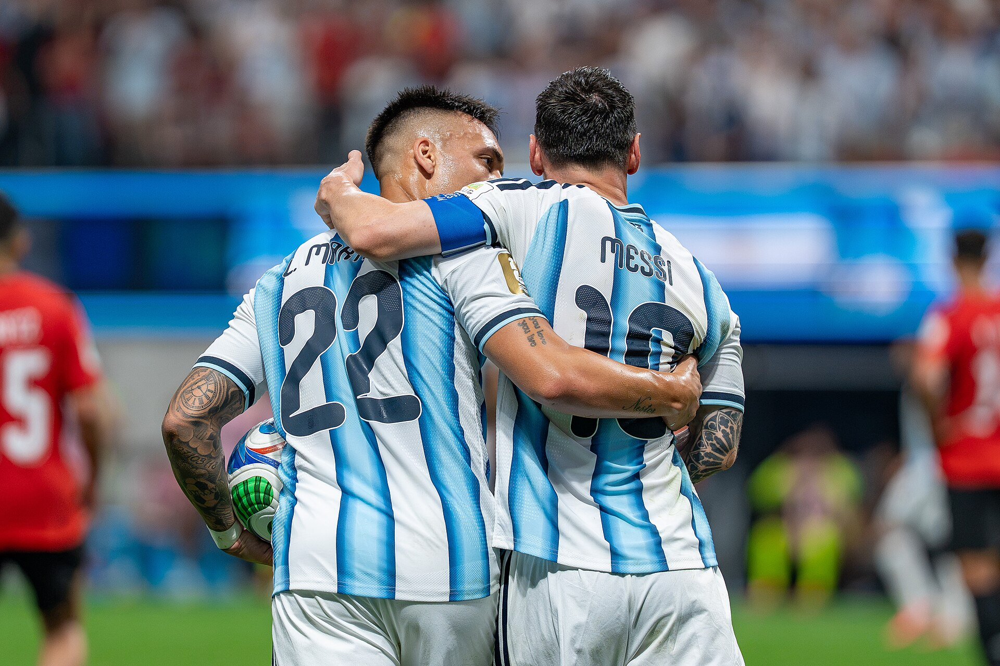

A Argentina está novamente na final da Copa do Mundo. Em uma semifinal marcada por tensão, resistência e uma virada construída nos minutos finais, a seleção comandada por Lionel Scaloni derrotou a Inglaterra por 2 a 1, nesta quarta-feira, 15 de julho de 2026, no Atlanta Stadium, nos Estados Unidos.
Anthony Gordon colocou os ingleses na frente no início do segundo tempo. Quando a Inglaterra se aproximava de sua primeira final mundial desde o título de 1966, Enzo Fernández empatou aos 85. Aos 92 minutos do segundo tempo, Lautaro Martínez completou de cabeça um cruzamento de Lionel Messi e decretou mais uma classificação mais dramáticas da campanha.
Messi não marcou, mas participou diretamente dos dois gols da reação. O camisa 10 encontrou Enzo na entrada da área e, na jogada decisiva, recuperou uma bola próxima à linha lateral antes de cruzar com a perna que não é a "boa" para Lautaro. A vitória, entretanto, não foi construída apenas pelo capitão. A pressão coletiva, as mudanças de Scaloni, a entrada decisiva do centroavante e o recuo excessivo da Inglaterra foram determinantes para a virada.
A Argentina chegou à decisão com sete vitórias em sete partidas, 19 gols marcados e sete sofridos. Depois de uma fase de grupos controlada, a atual campeã mundial precisou sobreviver a três confrontos dramáticos no mata-mata antes de derrubar uma das maiores rivais de sua história.
Uma semifinal travada
Argentina e Inglaterra entraram em campo para o sexto encontro entre as seleções em Copas do Mundo e o primeiro válido por uma semifinal.
O peso histórico apareceu antes mesmo de a bola rolar. Os torcedores argentinos foram maioria nas arquibancadas de Atlanta, preencheram o estádio com bandeiras e camisas azuis e brancas e abafaram a tentativa inglesa de cantar “Sweet Caroline”. A atmosfera favorável aos sul-americanos aumentou a sensação de que a Argentina atuava em casa.
No gramado, o primeiro tempo foi dominado pelas disputas físicas. Entradas fortes, discussões e interrupções impediram que as equipes encontrassem fluidez. Foram 19 faltas e dois cartões amarelos somente antes do intervalo, um retrato da intensidade e do cuidado dos dois lados para não oferecer espaços.
A Argentina teve mais posse de bola, mas encontrou dificuldades para avançar pelo centro. A Inglaterra fechou a região à frente da defesa, cercou Messi e tentou acelerar pelos lados sempre que recuperava a bola.
O resultado foi um primeiro tempo com poucas oportunidades claras. A seleção de Scaloni circulava a posse sem conseguir penetrar na última linha, enquanto os ingleses demonstravam organização para neutralizar o ataque adversário.
Inglaterra perto da decisão
O equilíbrio foi rompido aos 55 minutos. Nicolás Tagliafico tentou afastar a bola, mas ela ficou com Declan Rice. A jogada teve sequência com Morgan Rogers, que avançou e cruzou para o segundo poste.
Anthony Gordon apareceu nas costas da marcação e finalizou de primeira, sem dar possibilidade de defesa para Emiliano Martínez.
O gol colocou a Inglaterra a pouco mais de meia hora de sua primeira final de Copa do Mundo em 60 anos. A seleção inglesa havia controlado os principais espaços do jogo e agora possuía a vantagem necessária para explorar os contra-ataques.
A postura da equipe, no entanto, mudou imediatamente.
Em vez de manter a pressão e tentar ampliar o placar, a Inglaterra recuou suas linhas, diminuiu a presença no campo ofensivo e concentrou jogadores ao redor da própria área. Harry Kane reconheceu depois da partida que a equipe tentou apenas sustentar o 1 a 0 e não conseguiu manter a agressividade apresentada anteriormente.
A decisão ofereceu campo e posse à Argentina. A seleção de Scaloni passou a empurrar o adversário para perto da área de Jordan Pickford e transformou a parte final da semifinal em uma sequência quase permanente de ataque contra defesa.
Argentina cresce e aumenta a pressão
Scaloni adiantou seus laterais, aumentou a circulação da bola e passou a ocupar a entrada da área com mais jogadores.
Julián Álvarez e Nicolás González obrigaram Pickford a trabalhar. Alexis Mac Allister também acertou a trave em uma das melhores oportunidades da pressão argentina. A Inglaterra já não conseguia manter a bola no ataque nem oferecer ameaça constante nos contra-ataques.
Messi, que havia atuado de forma mais centralizada durante boa parte do confronto, começou a buscar o lado direito. O deslocamento permitiu que recebesse com um pouco mais de espaço e criasse cruzamentos para uma área cada vez mais preenchida.
Scaloni também modificou o ataque. Aos 81 minutos, Lautaro Martínez entrou no lugar de Julián Álvarez. A alteração colocou um centroavante de maior presença física entre os zagueiros e aumentou a capacidade argentina de atacar bolas levantadas.
A pressão cresceu à medida que o tempo diminuía. A Inglaterra se aproximava da classificação, mas já não controlava a partida.
O empate saiu aos 85 minutos. Messi recebeu a bola e encontrou Enzo Fernández livre na entrada da área. O meio-campista dominou e finalizou de aproximadamente 20 metros, acertando o canto de Pickford.
O gol alterou completamente o ambiente da semifinal. A Inglaterra, que havia passado vários minutos protegendo a própria área, precisou voltar a atacar. A Argentina percebeu a instabilidade do adversário e não demonstrou interesse em administrar o empate para disputar a prorrogação.
A seleção de Scaloni manteve jogadores no campo ofensivo, recuperou rapidamente as segundas bolas e continuou buscando a virada.
Os ingleses, por outro lado, não conseguiram reconstruir a organização que havia funcionado durante o primeiro tempo. A equipe parecia dividida entre avançar novamente e proteger o empate.
O gol da classificação
Mac Allister participou do ataque que terminou com a bola próxima à lateral direita. Messi impediu que ela saísse, levantou a cabeça e cruzou de direita para a área. Lautaro Martínez atacou o espaço entre os defensores, antecipou-se à marcação e cabeceou para o fundo da rede.
O centroavante estava em campo havia pouco mais de dez minutos. Na principal oportunidade que recebeu, marcou o gol que colocou a Argentina em sua segunda final mundial consecutiva.
O herói saindo do banco
A participação de Lautaro foi decisiva para o roteiro da semifinal.
O atacante acompanhou do banco as dificuldades argentinas para transformar posse em chances claras. Quando entrou, passou a ocupar permanentemente a região entre os zagueiros ingleses, oferecendo uma referência para cruzamentos e jogadas pelo alto.
Sua movimentação no gol resumiu o objetivo da alteração de Scaloni. Lautaro percebeu que Messi teria condições de cruzar, avançou nas costas da marcação e atacou a trajetória da bola.
Os jogadores argentinos correram inicialmente na direção de Messi, mas o gol também consagrou a importância de um elenco que encontrou respostas no banco de reservas.
Lautaro ainda revelou que havia dito a Mac Allister que entraria e marcaria. A previsão se confirmou no momento mais importante da campanha argentina até a final.
Os números históricos
As duas assistências contra a Inglaterra levaram Lionel Messi a 12 participações diretas em gols na Copa do Mundo de 2026.
O argentino soma oito gols e quatro assistências na competição. Dos 19 gols marcados pela seleção, 12 tiveram participação direta do capitão, aproximadamente 63% da produção ofensiva da equipe.
Na história completa das Copas, Messi chegou a 21 gols e 12 assistências. A soma representa 33 participações diretas em gols no torneio. O camisa 10 ampliou os recordes de gols e assistências em Mundiais e chegou à final na liderança da disputa pela Chuteira de Ouro de 2026.
A atuação contra a Inglaterra teve uma característica diferente das partidas anteriores. Pela primeira vez na competição, Messi decidiu sem precisar marcar. As duas assistências foram fundamentais, mas fizeram parte de uma reação construída pela insistência coletiva, pela entrada de Lautaro e pela capacidade de Enzo Fernández de aproveitar o espaço na entrada da área.
A rivalidade
Argentina e Inglaterra não são países vizinhos e nem se enfrentam com frequência. Mesmo assim, construíram uma das rivalidades intercontinentais mais intensas do futebol.
A relação mistura controvérsias esportivas, eliminações traumáticas e o impacto político da Guerra das Malvinas, chamada de Falklands War pelos britânicos, travada entre Argentina e Reino Unido em 1982.
O conflito não criou a rivalidade no futebol, mas aumentou sua carga emocional. A partir daquela década, os confrontos passaram a ser tratados de maneira diferente por torcedores, jogadores e imprensa dos dois países.
Para os argentinos, enfrentar a Inglaterra carrega um simbolismo comparável aos grandes clássicos contra Brasil, Uruguai. Para os ingleses, as lembranças de Diego Maradona em 1986 e da expulsão de David Beckham em 1998 transformaram a Argentina em uma adversária cercada por sentimentos particulares.
Scaloni tentou reduzir a tensão antes da semifinal e afirmou que se tratava de uma partida de futebol. Nas arquibancadas, porém, os cânticos sobre Maradona, Messi e as Malvinas mostraram que a história continua presente.
A vitória de 2026 acrescentou um novo capítulo. Quarenta anos depois dos gols de Maradona no México, a Argentina voltou a derrotar a Inglaterra por 2 a 1 em um confronto eliminatório de Copa do Mundo.
Foram necessários 24 anos para que os países voltassem a se enfrentar em uma Copa. A semifinal de 2026 terminou com o mesmo placar do histórico jogo de 1986: Argentina 2 a 1.
A campanha completa até a final
A Argentina chega à decisão com sete vitórias em sete jogos. A equipe começou a competição de maneira dominante, mas passou a enfrentar dificuldades cada vez maiores no mata-mata.
A sequência de partidas dramáticas revelou uma seleção menos controladora do que na fase de grupos, mas também mostrou a força emocional de um elenco acostumado a decisões.
-
A defesa do título começou em 17 de junho, com uma vitória por 3 a 0 sobre a Argélia.
Messi marcou os três gols da partida e tornou-se o jogador mais velho a conseguir um hat-trick em uma Copa do Mundo. A atuação também colocou o capitão em igualdade com o recorde de gols do torneio naquele momento.
-
Na segunda rodada, em 22 de junho, derrotou a Áustria por 2 a 0.
Messi marcou os dois gols e tornou-se o maior artilheiro da história da Copa do Mundo. O capitão ainda desperdiçou um pênalti no início da partida, mas respondeu com duas finalizações decisivas.
A vitória garantiu a classificação argentina para a fase eliminatória com uma rodada de antecedência.
-
Com a vaga assegurada, Scaloni realizou nove mudanças na escalação para enfrentar a Jordânia, em 28 de junho.
Mesmo com o time modificado, a Argentina venceu por 3 a 1. Giovani Lo Celso abriu o placar, Lautaro Martínez ampliou de pênalti e Messi, que começou no banco, marcou o terceiro. Mousa Al-Tamari fez o gol jordaniano.
A Argentina terminou a primeira fase na liderança do Grupo J, com nove pontos, oito gols marcados e apenas um sofrido.
-
A tranquilidade da fase de grupos desapareceu no primeiro jogo eliminatório.
Em 3 de julho, enfrentou Cabo Verde, uma das grandes surpresas do torneio, e precisou da prorrogação para vencer por 3 a 2.
Messi abriu o placar aos 29 minutos, mas os cabo-verdianos reagiram e conseguiram empatar duas vezes. A classificação argentina só foi confirmada aos 111 minutos, quando um cabeceio de Cristian Romero foi desviado por Diney Borges para o próprio gol.
Emiliano Martínez ainda realizou uma defesa importante em cobrança de falta nos minutos finais, evitando uma nova igualdade. O confronto deixou um alerta: a Argentina continuava forte, mas já não apresentava o mesmo controle dos primeiros jogos.
-
Nas oitavas de final, em 7 de julho, a Argentina viveu um cenário ainda mais dramático.
O Egito abriu 2 a 0 com gols de Yasser Ibrahim, aos 15 minutos, e Mostafa Zico, aos 67. Quando faltavam apenas 11 minutos para o fim do tempo regulamentar, a atual campeã parecia muito próxima da eliminação.
Cristian Romero diminuiu aos 79. Messi empatou aos 83 e levou o jogo para um final eletrizante. Aos 47 minutos da segunda etapa, Lautaro Martínez cruzou, e Enzo Fernández apareceu para marcar de cabeça o gol da virada.
Em pouco mais de 13 minutos, a Argentina transformou uma possível eliminação em uma classificação histórica. O jogo também consolidou a capacidade da equipe de reagir quando parecia emocionalmente derrotada.
-
Nas quartas de final, em 11 de julho, enfrentou a Suíça em Kansas City.
Mac Allister abriu o placar aos dez minutos, completando de cabeça uma cobrança vindo de um escanteio de Messi. Dan Ndoye empatou aos 67 e levou o confronto para mais uma prorrogação.
A situação suíça ficou mais complicada depois da expulsão de Breel Embolo. Com um jogador a mais, a Argentina ampliou a pressão e decidiu o confronto na parte final do tempo extra.
Julián Álvarez marcou aos 112 minutos, e Lautaro Martínez fechou o placar aos 121. A vitória vitória por 3 a 1 levou a seleção à semifinal, mas exigiu novamente resistência física e emocional.
Pela terceira vez no mata-mata, a Argentina precisou reagir a uma situação crítica. Contra Cabo Verde e Suíça, venceu na prorrogação. Diante de Egito e Inglaterra, encontrou os gols decisivos nos minutos finais do tempo regulamentar.
A frustração histórica da Inglaterra
Para os ingleses, a derrota representou uma das eliminações mais dolorosas de sua história recente.
A seleção esteve a cinco minutos da classificação e teve a oportunidade de manter uma postura mais agressiva depois do gol de Gordon. No entanto, recuou, perdeu o controle territorial e passou a depender das intervenções de Pickford.
O roteiro também lembrou outras derrotas inglesas em grandes competições. Na semifinal da Copa de 2018, a equipe abriu o placar contra a Croácia, mas perdeu por 2 a 1 na prorrogação. Na final da Eurocopa disputada em 2021, marcou primeiro diante da Itália e acabou superada nos pênaltis.
Contra a Argentina, o time voltou a perder uma vantagem em uma partida decisiva. Em apenas sete minutos, passou da proximidade da final para uma nova disputa pelo terceiro lugar.
A Inglaterra agora enfrentará a França pela disputa do terceiro lugar. O sonho de retornar a uma decisão mundial, algo que não acontece desde 1966, terá de ser novamente adiado.
Argentina e Espanha decidem a Copa do Mundo
Scaloni definiu essa capacidade de sofrer como parte da identidade argentina. A experiência acumulada no título de 2022 ajudou o elenco a manter a confiança mesmo quando as partidas pareciam fora de controle.
A força do grupo também apareceu nas decisões. Romero iniciou a reação contra o Egito. Enzo marcou gols decisivos nas oitavas e na semifinal. Lautaro saiu do banco para decidir contra Inglaterra e Suíça. Julián Álvarez resolveu as quartas na prorrogação. Mac Allister participou de jogadas fundamentais.
Messi continua sendo a principal referência, mas a Argentina chega à final porque encontrou protagonistas diferentes durante a campanha.
A final colocará frente a frente a atual campeã mundial e a campeã europeia.
A Argentina busca o quarto título de sua história, depois das conquistas de 1978, 1986 e 2022. A Espanha tenta levantar sua segunda taça, repetindo o feito de 2010.
O confronto também apresenta um contraste importante. A Argentina chega com o melhor ataque da competição, com 19 gols. A Espanha possui a melhor defesa e sofreu apenas um gol antes da decisão.
Caso seja campeã, a Argentina se tornará a primeira seleção a conquistar duas Copas do Mundo consecutivas desde o Brasil de 1958 e 1962. Também alcançará seu quarto título e se aproximará de Itália e Alemanha, ambas tetracampeãs.
A classificação contra a Inglaterra ficará marcada independentemente do resultado da final. Esteve atrás no placar, enfrentou uma rival cercada de história e encontrou dois gols quando a eliminação parecia próxima.
A Argentina acreditou até o último lance e transformou mais uma partida de sofrimento em um novo capítulo de sua história nas Copas.